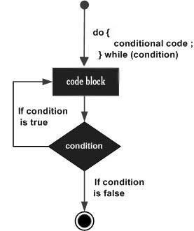

Unlike for and while loops, which test the loop condition at the top of the loop, the do...while loop in C programming checks its condition at the bottom of the loop.
A do...while loop is similar to a while loop, except the fact that it is guaranteed to execute at least one time.
Syntax
The syntax of a do...while loop in C programming language is −
do {
statement(s);
} while( condition );
Notice that the conditional expression appears at the end of the loop, so the statement(s) in the loop executes once before the condition is tested.
If the condition is true, the flow of control jumps back up to do, and the statement(s) in the loop executes again. This process repeats until the given condition becomes false.
Flow Diagram

#include
int main () {
/* local variable definition */
int a = 10;
/* do loop execution */
do {
printf("value of a: %d\n", a);
a = a + 1;
}while( a < 20 );
return 0;
}
When the above code is compiled and executed, it produces the following result −
value of a: 10
value of a: 11
value of a: 12
value of a: 13
value of a: 14
value of a: 15
value of a: 16
value of a: 17
value of a: 18
value of a: 19